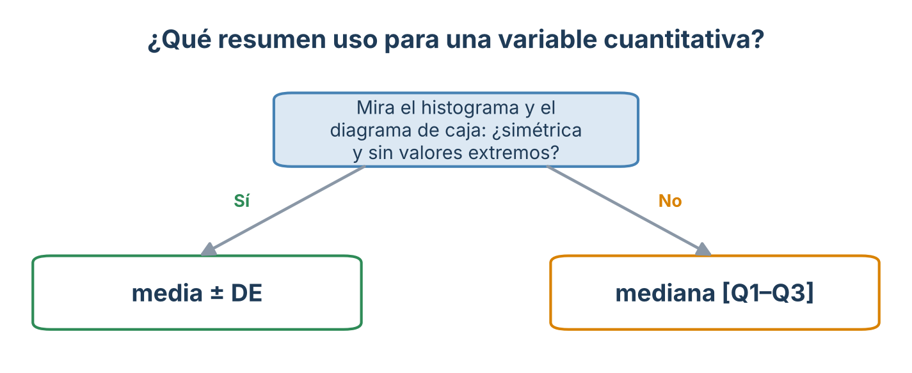
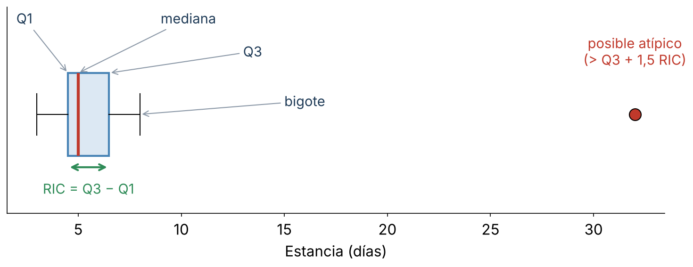
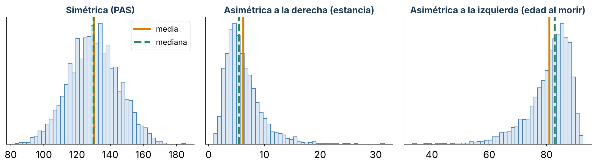

Bioestadística (1964) · Grado en Medicina · Curso 2027-2028
Tema 120Estadística descriptiva univariante: medidas de tendencia central, dispersión y forma
Módulo 3. Procesado inicial de datos
Fernando Borrás Rocher · Universidad Miguel Hernández de Elche · CC BY 4.0
Objetivos de aprendizaje
Al terminar esta sesión serás capaz de:
- Calcular e interpretar la media, la mediana y la moda.
- Calcular e interpretar el rango, la varianza, la desviación típica, el rango intercuartílico y el coeficiente de variación.
- Describir la forma de una distribución: simetría y asimetría.
- Elegir el resumen adecuado según la forma de la distribución: media y desviación típica, o mediana y rango intercuartílico.
- Representar una variable cuantitativa con un histograma y un diagrama de caja.
- Redactar la descripción de una variable como en la «Tabla 1» de un artículo.
Cómo usar esta presentación
Usa el selector de arriba para dar el tema en una sesión completa o en dos sesiones intercaladas.
🎓 Sesión de clase magistral
- 1. Caso clínico de partida 5 min
- 2. Conceptos clave 10 min
- 5. Autoevaluación 5 min
Explica los conceptos, haz la pausa activa y cierra con las ideas clave.
💻 Sesión de Colab
- 3. Demostración: describir variables clínicas 20 min
- 4. Práctica en la app Bioestadística 10 min
- 5. Autoevaluación 5 min
Cada estudiante abre su copia del cuaderno, predice el resultado y después ejecuta la celda.
Teclas: ← → para pasar · N notas del profesor · M cambiar de modo · F pantalla completa · Esc índice.
1. Caso clínico de partida
Once estancias por neumonía: ¿media o mediana?
- La media se desplaza hacia el valor extremo; la mediana no.
- Para planificar camas, la «estancia típica» la describe mejor la mediana con su dispersión.
2. Conceptos clave
2.1 Tendencia central

| Medida | Definición | Ventaja | Inconveniente |
|---|---|---|---|
| Media $\bar{x}$ | Suma de los valores dividida entre su número | Usa toda la información | Muy sensible a los valores extremos |
| Mediana | Valor central de los datos ordenados (percentil 50) | Robusta frente a valores extremos | Ignora la magnitud de los extremos |
| Moda | Valor más frecuente | Útil en variables categóricas | Puede no ser única |
$$\bar{x} = \frac{1}{n}\sum_{i=1}^{n} x_i$$
2. Conceptos clave
2.2 Dispersión
El diagrama de caja resume la distribución

- La caja va del primer al tercer cuartil: contiene el 50 % central (RIC).
- Los puntos más allá de 1,5 RIC se señalan como posibles atípicos: hay que revisarlos, no borrarlos.
2. Conceptos clave
2.3 Forma
La forma decide el resumen

- Simétrica: media ≈ mediana → media y DE.
- Asimétrica: la media se va hacia la cola → mediana y RIC.
Pausa activa
Piensa 30 segundos, comenta con quien tienes al lado y vota.
Las estancias de 5 pacientes son 2, 3, 3, 4 y 18 días. ¿Cuál es la mediana?
En la sesión de Colab
Lo que acabas de ver se comprueba con datos en el cuaderno del Tema 120.
- Abre el cuaderno y guarda tu copia: Archivo → Guardar una copia en Drive.
- Ejecuta la celda de configuración.
- Ve a la demostración y predice cada resultado antes de ejecutar.
3. Demostración: describir variables clínicas
3.1 Cálculo a mano y comprobación
▶ En tu cuaderno: 3.1 Cálculo a mano y comprobación. Antes de ejecutar, escribe qué esperas obtener.
Con las 11 estancias del caso, calculamos paso a paso y comprobamos con Python.
import numpy as np
import pandas as pd
estancias = pd.Series([3, 4, 4, 5, 5, 5, 6, 6, 7, 8, 32])
n = len(estancias)
media = estancias.sum() / n
desviaciones = estancias - media
varianza = (desviaciones ** 2).sum() / (n - 1)
desviacion_tipica = varianza ** 0.5
print(f"n = {n}")
print(f"Media: {media:.2f} días")
print(f"Varianza: {varianza:.2f} días²")
print(f"Desviación típica: {desviacion_tipica:.2f} días")print(f"Pandas → media {estancias.mean():.2f}, desviación típica {estancias.std():.2f}")
print(f"Mediana: {estancias.median()} días · Moda: {estancias.mode().tolist()} días")La mediana es el sexto de los 11 valores ordenados: 5 días. La moda también es 5: aparece tres veces.
3. Demostración: describir variables clínicas
3.2 Cuartiles, rango intercuartílico y efecto del valor extremo
▶ En tu cuaderno: 3.2 Cuartiles, rango intercuartílico y efecto del valor extremo. Antes de ejecutar, escribe qué esperas obtener.
q1, q3 = estancias.quantile([0.25, 0.75])
print(f"Q1 = {q1} · Q3 = {q3} · RIC = {q3 - q1} días")
print(f"Rango: {estancias.min()} a {estancias.max()} días")
sin_extremo = estancias[estancias < 32]
print(f"\nSin el paciente de 32 días: media {sin_extremo.mean():.2f} · mediana {sin_extremo.median()}")
print(f"Con él: media {estancias.mean():.2f} · mediana {estancias.median()}")Un solo paciente desplaza la media más de 2 días; la mediana apenas cambia. Por eso, en variables con valores extremos, la mediana y el RIC describen mejor lo típico.
3. Demostración: describir variables clínicas
3.3 Describir una variable del registro
▶ En tu cuaderno: 3.3 Describir una variable del registro. Antes de ejecutar, escribe qué esperas obtener.
DATOS = "https://raw.githubusercontent.com/fborrasumh/bioestadistica/main/datos/"
cohorte = pd.read_csv(DATOS + "cohorte_limpia.csv")
analiticas = pd.read_csv(DATOS + "analiticas.csv")
datos = cohorte.merge(analiticas, on="id", how="left")
def describir(serie, unidad):
"""Resumen descriptivo completo de una variable cuantitativa."""
q1, q3 = serie.quantile([0.25, 0.75])
return pd.Series({
"n": serie.notna().sum(),
"media": serie.mean(),
"desviación típica": serie.std(),
"mediana": serie.median(),
"Q1": q1,
"Q3": q3,
"mínimo": serie.min(),
"máximo": serie.max(),
"CV (%)": serie.std() / serie.mean() * 100,
"asimetría": serie.skew(),
}, name=f"{serie.name} ({unidad})").round(2)
pd.concat([
describir(datos["pas_mmHg"], "mmHg"),
describir(datos["creatinina_mg_dl"], "mg/dL"),
describir(datos["glucemia_mg_dl"], "mg/dL"),
], axis=1)El coeficiente de asimetría es cercano a 0 en distribuciones simétricas. Es positivo si hay cola a la derecha y negativo si la cola está a la izquierda. La PAS es casi simétrica (media ≈ mediana); la creatinina y la glucemia son asimétricas a la derecha (media > mediana).
3. Demostración: describir variables clínicas
3.4 Histograma con media y mediana
▶ En tu cuaderno: 3.4 Histograma con media y mediana. Antes de ejecutar, escribe qué esperas obtener.
import matplotlib.pyplot as plt
fig, ejes = plt.subplots(1, 2, figsize=(11, 4))
for eje, variable, unidad in zip(ejes, ["pas_mmHg", "creatinina_mg_dl"], ["mmHg", "mg/dL"]):
serie = datos[variable].dropna()
eje.hist(serie, bins=25, color="lightsteelblue", edgecolor="white")
eje.axvline(serie.mean(), color="firebrick", label=f"Media {serie.mean():.2f}")
eje.axvline(serie.median(), color="black", linestyle="--", label=f"Mediana {serie.median():.2f}")
eje.set_xlabel(f"{variable} ({unidad})")
eje.set_ylabel("Número de pacientes")
eje.legend()
ejes[0].set_title("Distribución simétrica")
ejes[1].set_title("Distribución asimétrica a la derecha")
plt.tight_layout()
plt.show()3. Demostración: describir variables clínicas
3.5 Diagrama de caja
▶ En tu cuaderno: 3.5 Diagrama de caja. Antes de ejecutar, escribe qué esperas obtener.
El diagrama de caja (boxplot) resume la distribución en cinco números. La caja va de Q1 a Q3 y la línea interior es la mediana. Los bigotes llegan hasta el último valor dentro de 1,5 × RIC. Los puntos aislados son los valores atípicos según el criterio de Tukey (Tema 100).
plt.figure(figsize=(6, 4))
plt.boxplot(datos["creatinina_mg_dl"].dropna(), widths=0.5)
plt.ylabel("Creatinina sérica (mg/dL)")
plt.xticks([])
plt.title("Diagrama de caja de la creatinina")
plt.show()Comparar grupos con diagramas de caja es muy eficaz:
grupos = [datos.loc[datos["centro"] == centro, "pas_mmHg"].dropna() for centro in ["CS Norte", "CS Sur", "CS Centro"]]
plt.figure(figsize=(7, 4))
plt.boxplot(grupos)
plt.xticks([1, 2, 3], ["CS Norte", "CS Sur", "CS Centro"])
plt.ylabel("Presión arterial sistólica (mmHg)")
plt.title("PAS por centro de salud")
plt.show()3. Demostración: describir variables clínicas
3.6 La descripción para la Tabla 1
▶ En tu cuaderno: 3.6 La descripción para la Tabla 1. Antes de ejecutar, escribe qué esperas obtener.
def tabla1(serie, unidad, decimales=1):
"""Devuelve media ± DE si la variable es aproximadamente simétrica, y mediana [Q1-Q3] si no."""
s = serie.dropna()
if abs(s.skew()) < 0.5:
return f"{s.mean():.{decimales}f} ± {s.std():.{decimales}f} {unidad}"
q1, q3 = s.quantile([0.25, 0.75])
return f"{s.median():.{decimales}f} [{q1:.{decimales}f}–{q3:.{decimales}f}] {unidad}"
for variable, unidad, d in [("edad", "años", 1), ("pas_mmHg", "mmHg", 1),
("imc", "kg/m²", 1), ("creatinina_mg_dl", "mg/dL", 2)]:
print(f"{variable:>18}: {tabla1(datos[variable], unidad, d)}")El umbral de 0,5 para el coeficiente de asimetría es una regla práctica, no un criterio universal. La decisión final se toma también mirando el histograma y con criterio clínico.
Ampliación
Ampliación: la trampa de numpy y la desviación típica
Pandas divide entre $n - 1$ (desviación típica muestral), pero numpy.std() divide por defecto entre $n$ (poblacional). Con muestras pequeñas la diferencia se nota. Un asistente de IA puede usar cualquiera de las dos sin avisar.
print(f"pandas .std(): {estancias.std():.3f}")
print(f"numpy np.std(): {np.std(estancias):.3f} ← divide entre n")
print(f"numpy np.std(ddof=1): {np.std(estancias, ddof=1):.3f}")Ampliación
Ampliación: la regla de la media ± 2 desviaciones típicas
En una distribución aproximadamente normal, alrededor del 95 % de los valores están entre la media − 2 DE y la media + 2 DE. En una distribución asimétrica esta regla falla, y a veces da límites imposibles:
print(f"Estancias: media − 2 DE = {estancias.mean() - 2 * estancias.std():.1f} días ← una estancia negativa no existe")Atención a «media ± DE» en una variable que no puede ser negativa. Si la DE es mayor que la mitad de la media, la distribución es asimétrica. Ese resumen no es el adecuado.
Ampliación
Ampliación: errores frecuentes
Describir con media ± DE una variable claramente asimétrica, como la estancia o la creatinina.
Confundir la desviación típica con el error estándar. La DE describe la dispersión de los pacientes; el error estándar, la precisión de la media. Lo veremos en el Tema 200.
Eliminar valores extremos reales para que la media «quede mejor».
Comparar dispersiones de variables con unidades distintas con la DE en lugar del coeficiente de variación.
Dar demasiados decimales: una presión arterial media de 127,4183 mmHg aparenta una precisión que la medición no tiene.
Ampliación
Ampliación: La curtosis
La asimetría dice hacia qué lado está la cola. La curtosis dice cuánto peso tienen las colas: cuántos valores extremos hay comparado con una normal.
pandas calcula el exceso de curtosis (.kurt()). Vale 0 en una normal. Si es positivo, hay más valores extremos que en una normal (colas pesadas). Si es negativo, hay menos (colas ligeras).
En tus materiales SIMUSTAT: Tema 200. Análisis descriptivo de variables, apartado 5 (medidas de forma).
for variable in ["pas_mmHg", "glucemia_mg_dl", "hdl_mg_dl"]:
x = cohorte[variable].dropna()
print(f"{variable:16} asimetría = {x.skew():5.2f} exceso de curtosis = {x.kurt():5.2f}")Una curtosis alta avisa de que hay valores extremos. En ese caso, revisa si son errores (Tema 100). Si son reales, la media y la DE resumen mal la variable: usa la mediana y el RIC.
4. Práctica en la app Bioestadística
Abre la unidad 120 de la app Bioestadística y completa sus misiones:
- Misión básica (sin asistente): calcular a mano la media, la mediana y la desviación típica de 7 valores de hemoglobina.
- Misión clínica (con pistas): describir el colesterol LDL y la HbA1c de la cohorte y decidir el resumen adecuado para cada una.
- Misión reto (con asistente): pedir al asistente la descripción de cuatro variables, comprobar si usa $n$ o $n-1$ y corregir los resúmenes inadecuados.
Al terminar, exporta el informe de la unidad.
5. Autoevaluación
Responde sin asistente y sin ejecutar código.
5. Autoevaluación
Elige una opción: verás la explicación.
Las estancias de 5 pacientes son 2, 3, 3, 4 y 18 días. ¿Cuál es la mediana?
¿Cómo debe describirse la creatinina de una cohorte con una clara asimetría a la derecha?
En una muestra, la media es 7,7 y la mediana 5. ¿Qué forma tiene probablemente la distribución?
¿Por qué la desviación típica muestral divide entre n − 1?
Quieres comparar la variabilidad del peso (kg) y de la glucemia (mg/dL) en la cohorte. ¿Qué medida usas?
Ideas clave
- La media usa todos los datos pero se deja arrastrar por los extremos; la mediana es robusta.
- La desviación típica acompaña a la media; el rango intercuartílico, a la mediana.
- La forma de la distribución decide el resumen: media ± DE si es simétrica, mediana [Q1–Q3] si es asimétrica.
- El histograma y el diagrama de caja muestran lo que los números resumen.
- Comprueba siempre si el cálculo de la desviación típica divide entre $n$ o $n-1$.
Glosario
| Término | Definición |
|---|---|
| Media | Suma de los valores dividida entre su número |
| Mediana | Valor que deja la mitad de los datos por debajo y la mitad por encima |
| Moda | Valor más frecuente |
| Percentil | Valor que deja por debajo un porcentaje dado de los datos |
| Cuartiles | Percentiles 25 (Q1), 50 (Q2, la mediana) y 75 (Q3) |
| Varianza | Media de las desviaciones al cuadrado respecto a la media |
| Desviación típica | Raíz cuadrada de la varianza |
| Coeficiente de variación | Desviación típica dividida entre la media |
| Asimetría | Grado en que una distribución se aparta de la simetría |
| Diagrama de caja | Gráfico que resume la distribución con la mediana, los cuartiles y los valores atípicos |
Para saber más
- Altman DG, Bland JM. Quartiles, quintiles, centiles, and other quantiles. BMJ. 1994;309(6960):996. doi:10.1136/bmj.309.6960.996
- Altman DG, Bland JM. Standard deviations and standard errors. BMJ. 2005;331(7521):903. doi:10.1136/bmj.331.7521.903
- Pandas: estadística descriptiva
- SIMUSTAT Unidigital UMH. Tema 200. Análisis descriptivo de variables. Cuaderno de Google Colab. Elche: Universidad Miguel Hernández; 2023.